طرق المجموعة#
Ensemble methods
أمثلة تتعلق بوحدة sklearn.ensemble.


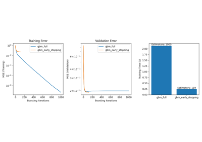
إيقاف التدريب المبكر في Gradient Boosting
إيقاف التدريب المبكر في Gradient Boosting
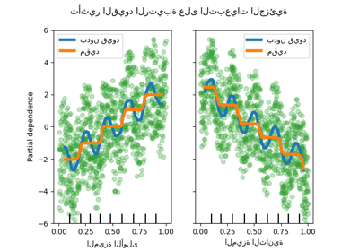
القيود الرتيبة
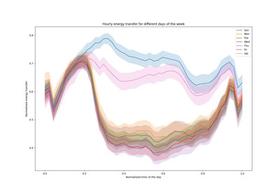
الميزات في أشجار التعزيز المتدرج للهيستوغرام
الميزات في أشجار التعزيز المتدرج للهيستوغرام
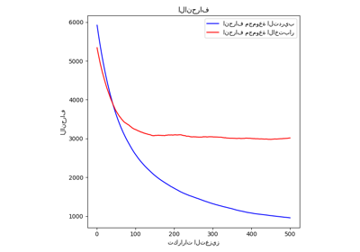
انحدار التعزيز المتدرج

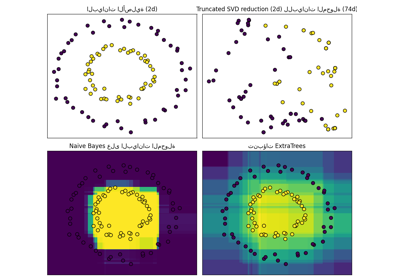
تحويل ميزة التجزئة باستخدام الأشجار العشوائية تمامًا
تحويل ميزة التجزئة باستخدام الأشجار العشوائية تمامًا


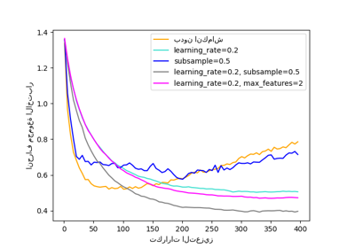
تنظيم التعزيز المتدرج
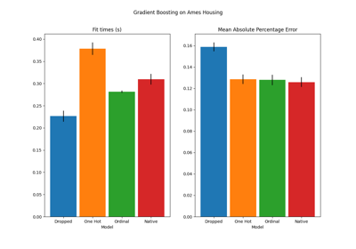
دعم الميزات التصنيفية في التدرج التعزيزي
دعم الميزات التصنيفية في التدرج التعزيزي

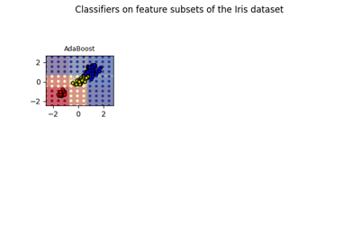
رسم أسطح القرار لمجموعات الأشجار على مجموعة بيانات إيريس
رسم أسطح القرار لمجموعات الأشجار على مجموعة بيانات إيريس
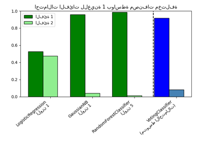
رسم احتمالات الفئات المحسوبة بواسطة VotingClassifier
رسم احتمالات الفئات المحسوبة بواسطة VotingClassifier
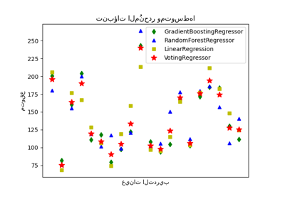
رسم تنبؤات الانحدار الفردية والتصويتية
رسم تنبؤات الانحدار الفردية والتصويتية
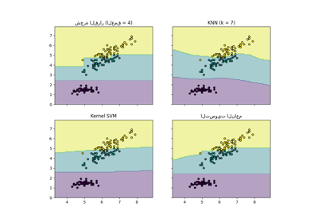
رسم حدود القرار لـ VotingClassifier
رسم حدود القرار لـ VotingClassifier

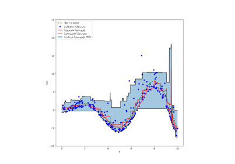
فترات التنبؤ لانحدار التعزيز المتدرج
فترات التنبؤ لانحدار التعزيز المتدرج
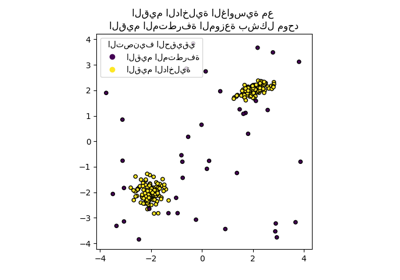
مثال IsolationForest
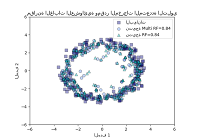
مقارنة الغابات العشوائية ومقدر المخرجات المتعددة التلوي
مقارنة الغابات العشوائية ومقدر المخرجات المتعددة التلوي

مقارنة بين المُقدر الفردي والتجميع: تحليل الانحياز والتشتت
مقارنة بين المُقدر الفردي والتجميع: تحليل الانحياز والتشتت

مقارنة بين نماذج الغابات العشوائية ورفع التدرج بالرسم البياني
مقارنة بين نماذج الغابات العشوائية ورفع التدرج بالرسم البياني